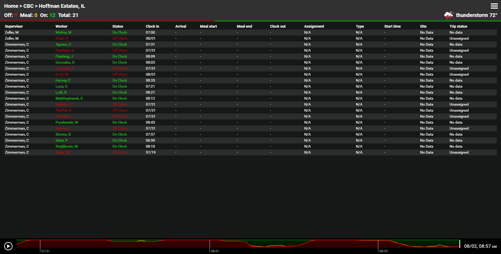
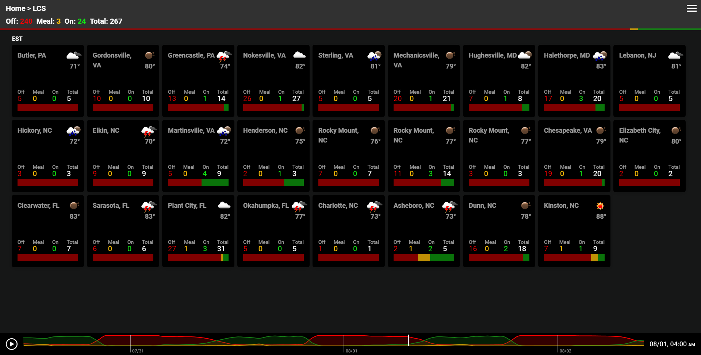
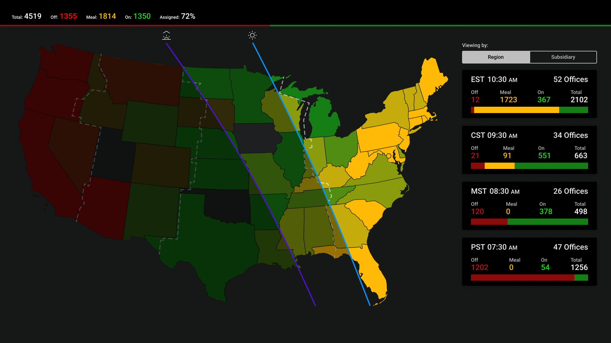

Crew Reporting
Application Background
An executive at the company wanted a solution that would provide an overview of the status of field crews by office and area to leadership at corporate and subsidiary level. The ask was for the solution to be similar to that of an airport flightboard display for checking the status of flights.
The Challenges
The stakeholders had some specific requests that needed to be accommodated:
- Data density - Stakeholders wanted to be able to get a snapshot view of the crew data that would inform them of where they would need to dive in further. This meant that a large amount of data had to be displayed on the screen while still being legible, and allowing conclusions to be made.
- Historical information - Stakeholders wanted to be able to view how the crew statuses changed throughout the day
- Interactivity and environemnt - The solution needed to be able to be viewed on a computer, or a large TV in a field office. Users on a computer would have to interact with features such as a timeline, or dive into different areas of the dataset. When the application was used on a TV, the purpose is so that it can be monitored from time to time during the day, providing up to date insights to the statuses of crews. When designing the app, device constraints such as screen burn in were taken into consideration.
- Extendable - The original ask was for a POC to be developed to see how useful the solution would be in the day to day business. It was known that if the solution was successful, that more data displays would be requested, so the POC had to leave room for growth.
Approach Summary
- Discovery sessions with stakeholders from corporate and subsidiaries
- Meetings with data team to find out what data points were available to work with
- Created variations of an initial design, to test the limits of data density
- Tried out mockups on different devices to make sure conclusions could be drawn at the different levels
- Refined mockups and built the POC application
- Deployed POC to pilot offices and users. Gathered feedback after a few weeks of use and then made changes
- Delivery to full product development team
Results
Stakeholders found the insights the solution provided helpful in knowing the status of crews, and allowed them to take action if necessary.
After the initial deployment, work began on providing some additional data displays that gave a geospatial view of the data. In the future, additional data sources are planned to be added to the solution to give more granular insight into the status of a crew.
Solution Highlights
The intial prototype, showing the view of employees from one field office. Colors were used to indicate users who were on or off the clock, and a timeline at the bottom allows users to playback 3 days worth of data.
An overview display of all the offices belonging to a subsidiary. This is one of the views intended to be left on a TV so that a manager can track the status of offices through a day. If they notice something odd, they can dive down into a more granular view.
A map view that was added post initial rollout. This view provides information by state, and allows users to drill down from there. It displays sunrise, and sunset bars throughout the day to provide an additional factor to take into account when making business decisions.
